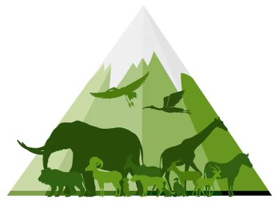
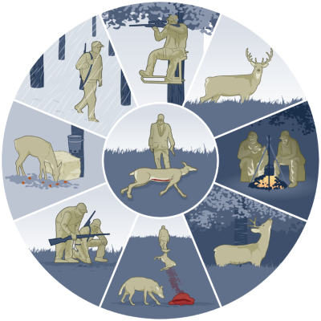
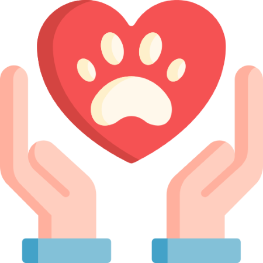
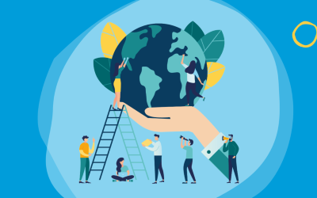

Safeguarding Wildlife for a Sustainable Future
Wildlife conservation is a cornerstone of environmental sustainability. Under UN Sustainable Development Goal 15 - Life on Land, protecting endangered species and restoring natural habitats are critical for the survival of all life forms.
Wildlife not only maintains ecological balance but also supports agriculture, medicine, and global biodiversity. However, many species are on the brink of extinction due to human actions.

🌍 Did You Know?
More than 1 million species are currently threatened with extinction, many within decades. Conserving wildlife helps secure the natural resources we all depend on. Ecosystems simply cannot function properly if key pieces of the puzzle are removed. Every plant, animal, and insect plays a specific role in keeping the earth functioning.
Problems Facing Wildlife
1. Habitat Loss and Fragmentation
Forests, grasslands, and wetlands are being lost to mining, road-building, housing development, and agriculture. Not only are they destroying habitats, but they are also fragmenting them into small, isolated patches that make it difficult for species to move around, mate, and forage.
Example: Tea plantation deforestation and urbanization in Sri Lanka endanger endemic wildlife like the Horton Plains slender loris.
2. Poaching and Illegal Wildlife Trade
Animal trade is the fourth largest global illegal trade. Wild animals are hunted or trapped and are being sold as ivory, hides, pets, medicine, or trophies.
Example: Poaching of the Sri Lankan pangolin even when legally protected occurs. Tigers, elephants, rhinos, and birds like hornbills are poached globally.

3. Climate Change
Harsh weather, rising temperatures, and changing rain patterns affect the life cycle of animals. Some animals must migrate or die if the environment changes too quickly.
Example: Rising sea temperatures cause coral bleaching that affects marine diversity as well as coastal organisms that depend on it.
4. Pollution and Waste
Plastic pollution, oil leaking, and chemical runoff from agriculture and industry go into rivers and oceans and kill aquatic and land animals.
Example: Sea turtles and birds mistakenly consume plastic, clog their intestines, and die.
5. Human-Wildlife Conflict
When human beings venture into forest zones, land and resource competition ensues. Wild animals raid farms or villages for food and are hurt or killed during the process.
Example: The Sri Lankan human-elephant conflict kills hundreds of elephants and human beings annually.
Solutions for Conservation

1. Establishing Wildlife Sanctuaries and Corridors
Protected land like national parks and biosphere reserves allow animals to live together without any human interference. Wildlife corridors connect fragmented habitats so that animals can migrate freely.
Example: Sri Lanka's Yala and Wilpattu National Parks provide significant protection to leopards, elephants, and sloth bears.
2. Strengthening Laws and Enforcement
Severe punishment for poaching, logging, and trafficking has to be enforced. Application of surveillance technology like drones and camera traps help to detect danger immediately.
Example: Convention on International Trade in Endangered Species (CITES) regulates trade in over 35,000 species.
3. Ecotourism and Community-Based Conservation
While individuals stand to gain from nature conservation (such as employment in tourism or conservation), they are more likely to adopt sustainable practice.
Example: Ecotourism by eco-lodges in Sinharaja Forest profits local families while maintaining rainforests.
4. Habitat Restoration and Rewilding
Tree planting which are native here, wetland restoration, and species reintroduction to habitat where it has disappeared help restore the planet.
Example: Gray wolf reintroduction to Yellowstone National Park in the US helped re-balance the ecosystem by controlling deer populations.
Environmental Education
Schools, village, and campaigns educate individuals on the value of living with wildlife.
Actions You Can Take

1.Join conservation clubs in your area or work on an afforestation project.
2.Avoid buying exotic pets or products from ivory, fur, or endangered species.
3.Educate others on the worth of wildlife by sharing blogs, posting signs, or commenting on social media posts.
4.Reduce the use of plastic with reusable bags, water bottles, and containers.
5.Encourage organic and low-pesticide and deforestation agriculture.
6.Get wildlife conservation heard in your community or at the voting station.
7.Travel responsibly to national parks and support ecotourism activities.